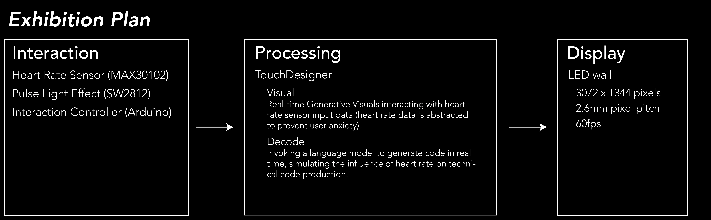
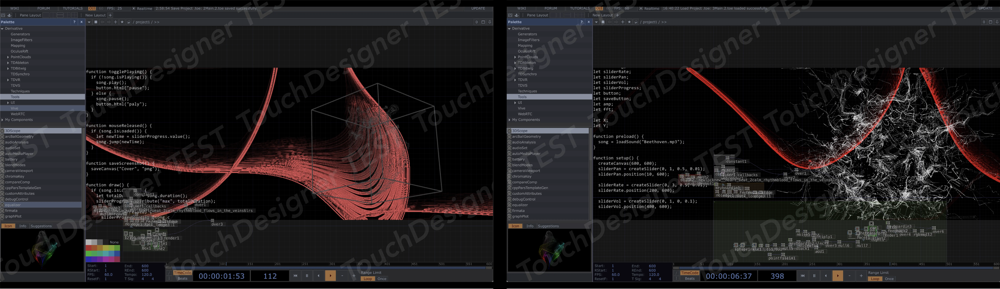
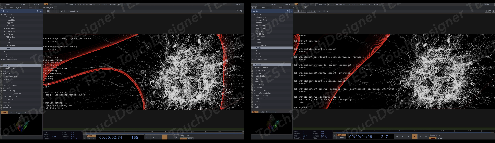
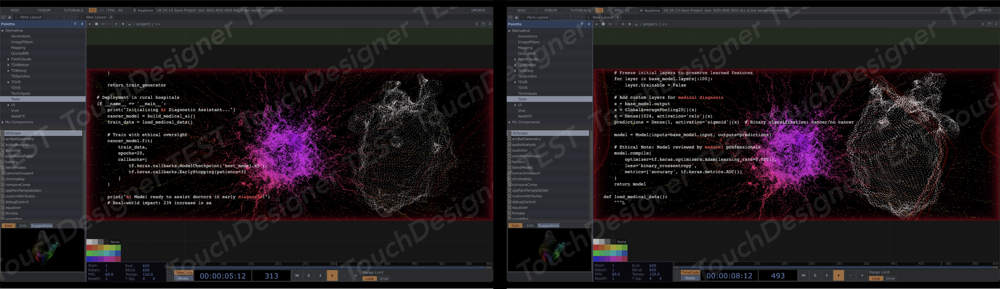
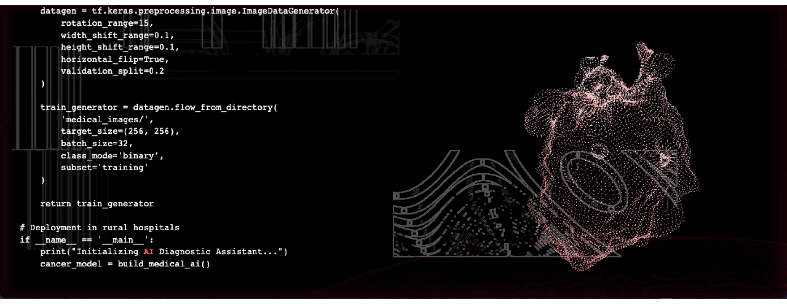
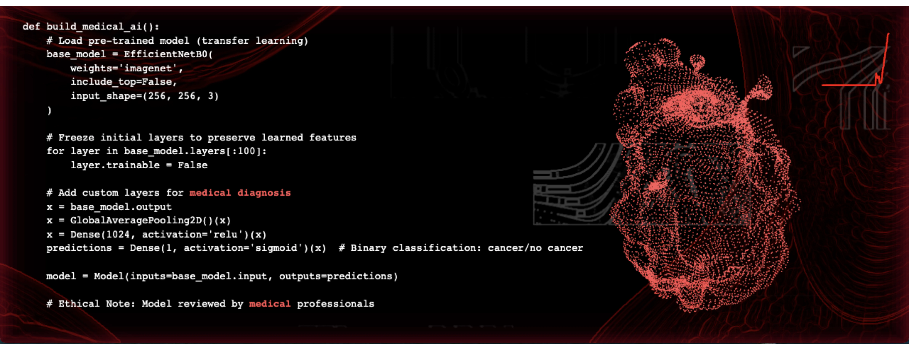
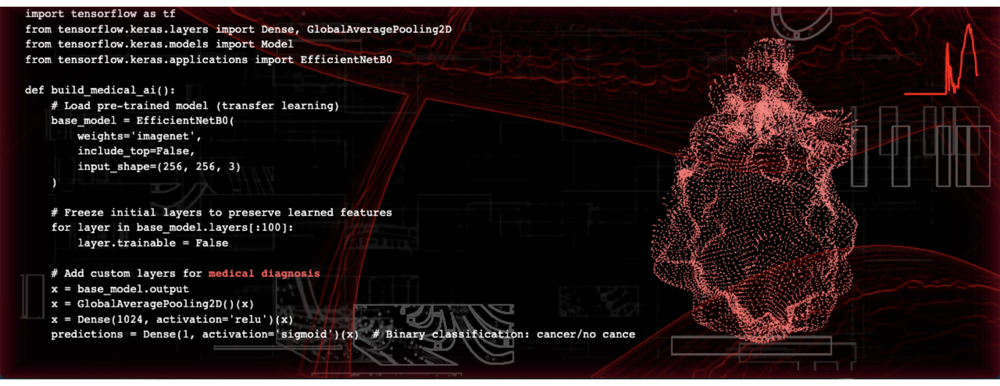
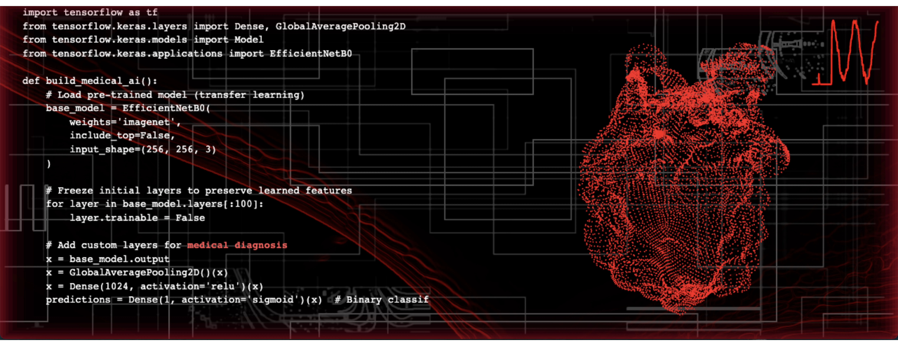
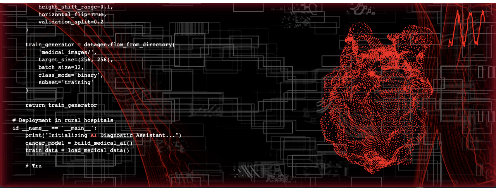

console.log("0xPULSE")
Exhibition

Exhibition
LONDON TECH WEEK 2025
UAL Summer Show


"console.log("0xPULSE");" is a poetic interactive art installation. When participants hold the heart rate sensor, a 3D heart suspended in mid-air pulses in sync with their real heartbeat. Surrounding streams of data suddenly accelerate—within those flickering lines of code lie encrypted messages that hint at technologies capable of reshaping humanity’s future. This is not only a choreography between heartbeat and algorithm, but also a gentle inquiry into the very nature of technology itself.
Built with TouchDesigner, the system delivers real-time visual interaction driven by live heart rate data. A language model operates in the background, generating “pseudo-code” to emulate the dynamics of technological evolution.
Developed in collaboration with UAL Creative Computing Institute (CCI), the project was exhibited at London Tech Week within the “Future Play” zone at Olympia London (9–13 June).
Presented on-site over three days, the installation invited visitors to participate in an interactive exploration of the dialogue between the human body and technology.











